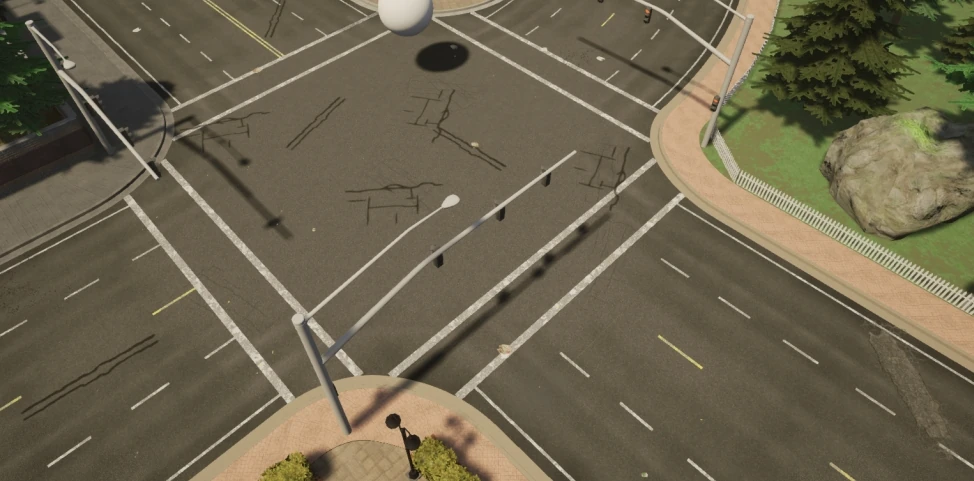
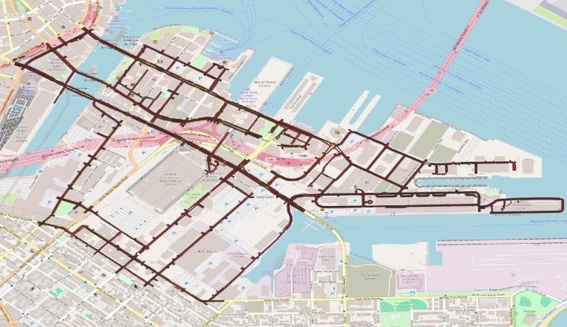

OpenDRIVE and Lanelet2 are both representation formats for maps, particularly for road networks and commonly used in autonomous driving. Despite being designed for pretty much the same purpose, both formats differ quite heavily from a conceptual perspective, especially in how they model road networks internally. However, one can be converted to the other.

(Source)
Primer on OpenDRIVE and Lanelet2
OpenDRIVE is much more standardized and structured, less ambiguous, but also more complex conceptually. Lanelet2, on the other hand, is very open and flexible, but thus also leaves room for interpretation in many cases.
In OpenDRIVE, the entire road network is defined relative to a reference line, along which individual lanes and other road elements extend at given offsets. OpenDRIVE files (.xodr) themselves are XML files following a standardized schema. You can find an example here.
Lanelet2, on the other hand, essentially represents the world in form of simple geometric structures, including points, linestrings, polygons and - first and foremost - so called lanelets. Lanelets are essentially polygons that follow a few special constraints and that represent individual, elementary pieces of lanes (and thus of entire roads). Each of these primitives, can (and usually will) have a set of tags attached to them, which describe their role and “meaning”. Lanelet2 maps are stored as OpenStreetMap files (.osm), that is, XML files consisting of nodes and relations between these nodes. Here is an example.
Lanelet2 maps can be viewed and edited using JOSM. For viewing OpenDRIVE maps, you can use odrviewer.io. For creating and editing, you can use the (non-free) RoadRunner software, TrueVision Designer or the Driving Scenario Creator add-on for Blender.
Converting OpenDRIVE to Lanelet2
As Lanelet2 is the structurally “simpler” format, it can be created from OpenDRIVE in a fairly straightforward way. Converting OpenDRIVE to Lanelet, on the other hand, is much harder. There have been attempts to come up with conversion tools, but - to my knowledge - none of them works great, yet. We’re focusing on the .xodr -> .osm conversion in this article.
Luckily, a research group at TUM has come up with a very convenient tool for this, called CommonRoad Scenario Designer. They even published a paper on Automatic Conversion of Road Networks from OpenDRIVE to Lanelets.
Prerequisites
You will need to have a recent version of Python (preferably Python 3.11) installed. Also, of course, you will need the .xodr file to be converted.
Installation
Install the scenario designer using pip:
1 | $ pip install commonroad-scenario-designer |
Conversion
Run the conversion:
1 | $ crdesigner --input_file my_map_01.xodr --output_file my_map_01.osm odrlanelet2 |
That’s it! There’s literally nothing more to it.

(Lanelet map visualized in QGIS)
Projections and coordinate systems
The scenario designer will, by default, not perform any coordinate conversions. Output will be in the same coordinate reference system (CRS) as your XODR input. Often times, you will see EPSG:4258 or EPSG:4326 to be used, that is, latitude / longitude pairs - or what is commonly referred to as GPS coordinates. However, when loading your Lanelet2 file programatically (see example below) using their tool suite, things look much differently. You will find coordinates in a vastly different range.
The reason is that the Lanelet2 library converts to Cartesian, that is x- and y, coordinates upon loading the map. Cartesian (“projected”) coordinates are much easier to work with, because you can apply Euclidean arithemtic, etc. (simply get the distance between two points like you learned in high school), which does not work as is when dealing with lat / lon angles. More specifically, Lanelet2, by default, uses something they call a Spherical Mercator projection. To my understanding, this is some custom-made thing, does not correspond to an official CRS / projection and thus will cause you a lot of problems when working with in other contexts.
Thus, I recommend to instruct Lanelet2 to use UTM coordinates (see UtmProjector) instead. UTM is is a widely adopted framework, even though special in a way that it splits the world into so called zones and then has CRS’ that are only defined for certain parts of the globe. It is, nevertheless, very useful and my recommendation if you want to work with your Lanelets’ coordinates somewhere else than only inside the Lanelet2 map itself.
Here’s a code example to load and reproject the map in Python:
1 | import lanelet2 |
Happy coding!